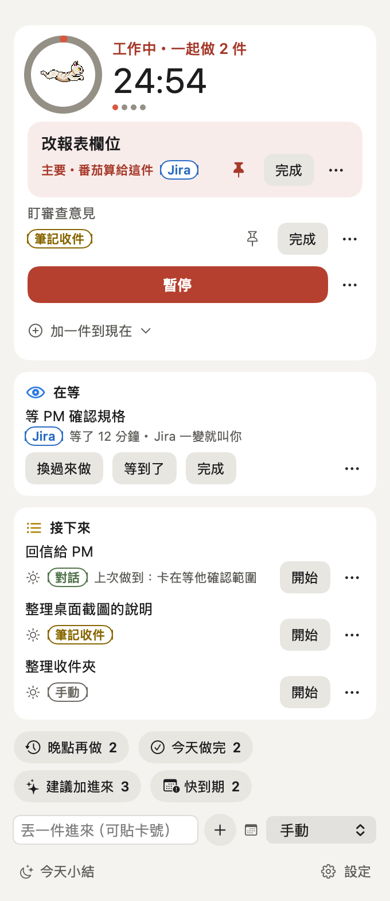
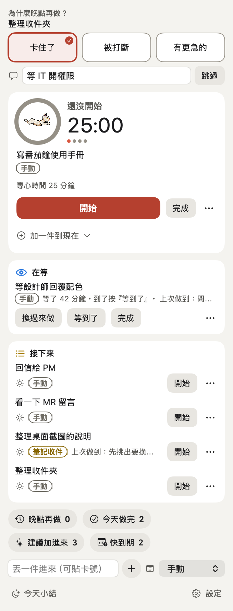
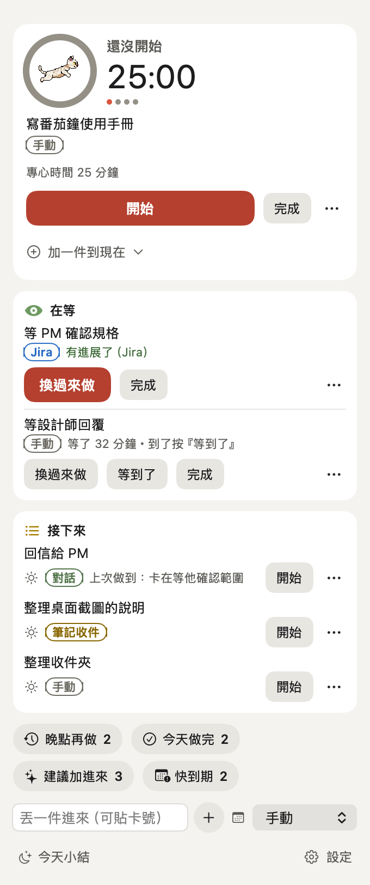

同時盯好幾件事，
也知道現在該做哪一件
FocusCat 是住在 Mac 選單列上的番茄鐘。手上在做哪幾件、在等誰、AI 跑到哪一步，打開面板就看得到。換去做別件之前，它會先問你一句「做到哪」。可以自己寫外掛把別的地方的事接進來，也能直接跟 Claude Code 一起用。
macOS 13 以上，Apple Silicon 與 Intel 都可以。不用會寫程式。
 選單列上：一個小角色，旁邊是這一段還剩幾分鐘
選單列上：一個小角色，旁邊是這一段還剩幾分鐘
一個人同時跑好幾件事，最容易掉的是「我剛剛做到哪」
番茄是 25 分鐘工作、5 分鐘休息，做滿四輪休息 15 分鐘。時間到不會自己開始下一段，要你自己按。除了計時，FocusCat 幫你記下面這幾件事。
一起做好幾件，主要那件釘著
「現在」可以同時放好幾件。主要那件標實心圖釘，番茄的時間算在它身上。拖到第一個，就變成主要那件。

放下前，留一句「做到哪」
換去做別件、晚點再做、放進「在等」時，面板最上面會問一句原因和做到哪。回來時，那件旁邊就寫著「上次做到：…」。不想寫，按 Enter 跳過。

等別人的事，放著也看得到
等 PM 回、等 QA 驗的事放進「在等」，不算專心時間，旁邊寫著等了多久。等的是 Jira 卡的話，卡片有動靜就叫你。

AI 在背景跑，輪到你才叫你
「自動化」那一區列出每件背景工作在哪一步、跑了幾分鐘。只有停下來等你的那件會變成「要你處理」並跳通知，還在跑的只列著，不吵你。
要你的腳本或 AI 把狀態寫成一份小檔案，FocusCat 去讀。

下班前看一眼今天
按「今天小結」，看今天做了幾個番茄、做完幾件、中途換了幾次。

外掛：把別的地方的事接進來
外掛是一支小程式，用什麼語言寫都可以。FocusCat 送一行 JSON 給它，它回一份 JSON，裡面是要列進建議清單的事。你的待辦散在哪裡，就寫一支外掛去那裡拿。
- 附了兩支外掛Jira：你在等的卡有動靜就叫你。自動化工作：讀你的腳本或 AI 寫的狀態檔，列出每件背景工作跑到哪一步，輪到你才跳通知。
- 每一件可以帶按鈕除了標題，還能帶一行說明、網址、狀態字，和最多 4 顆按鈕：打開網址、FocusCat 內建的動作、或交回給外掛處理。
- 寫好先試跑到「設定 ▸ 外掛」點進那支外掛，按「試跑」，會告訴你哪裡不對、怎麼修。新外掛預設關著，你打開它才會跑。
- 帳號不外流Jira 的帳號和 token 只交給附帶的 Jira 外掛，別的外掛要了也拿不到。
{
"contract": 1,
"candidates": [
{ "key": "mine:42",
"title": "回覆客戶的信",
"url": "https://…" }
]
}每一件的 key 寫成「外掛名字＋冒號＋你自己的編號」。
跟 Claude Code 一起用
在「設定 ▸ 外掛 ▸ Claude Code 套件」按「安裝…」，一次裝好下面三樣。Claude 會知道你現在在做哪幾件，你也不用離開 Claude Code 去看番茄。
/focus-panel 可以打開面板。
安裝只要三步
第一次打開時 macOS 會擋一下，這是因為 App 沒有付費的 Apple 開發者簽章，跟 App 本身有沒有問題無關。
- 1下載到 Releases 下載 FocusCat 的 zip，點兩下解壓縮。
- 2拖進「應用程式」打開 Finder，把 FocusCat 拖進左邊的「應用程式」。
- 3第一次按右鍵 →「打開」還是被擋，就到「系統設定 → 隱私權與安全性」按「仍要打開」。只有第一次要做。